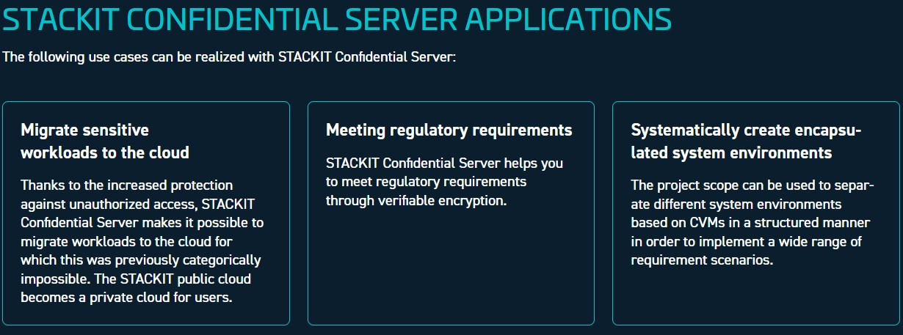
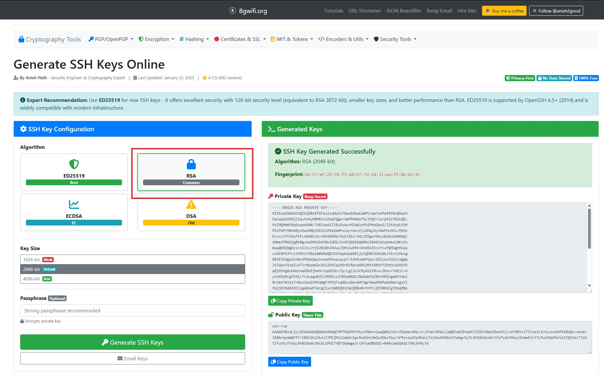
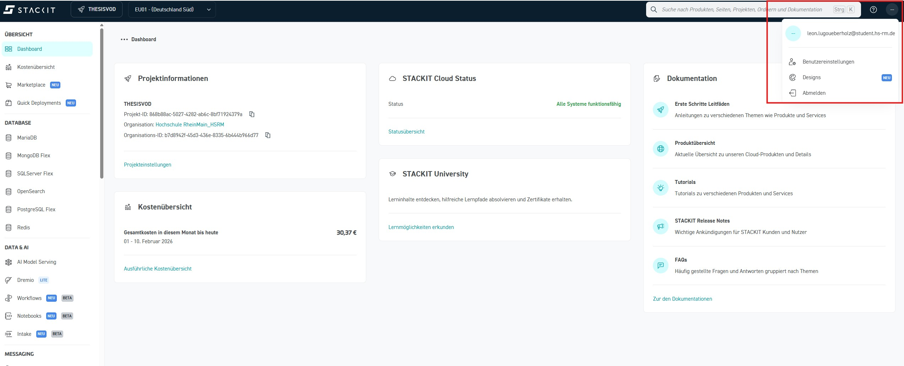
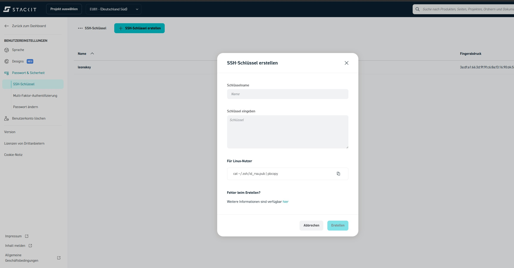
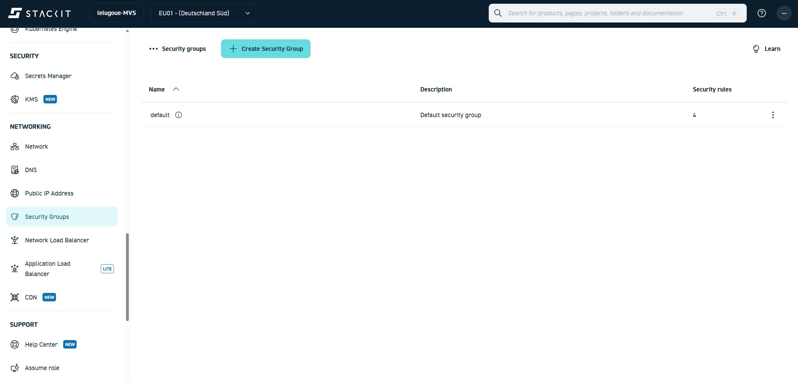
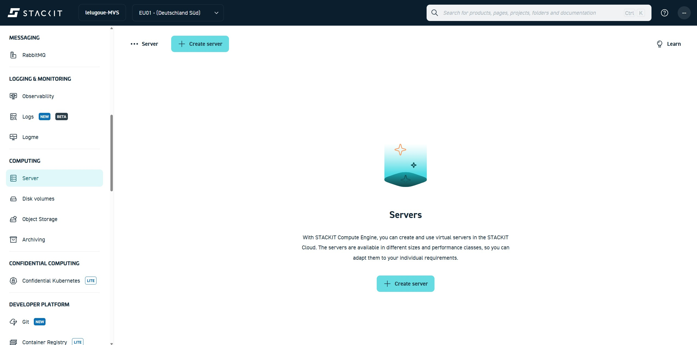
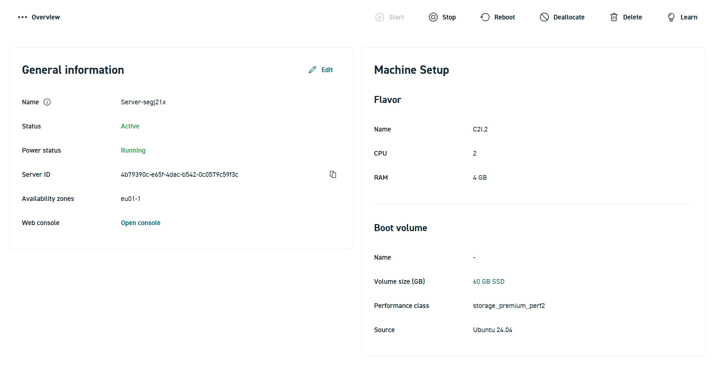
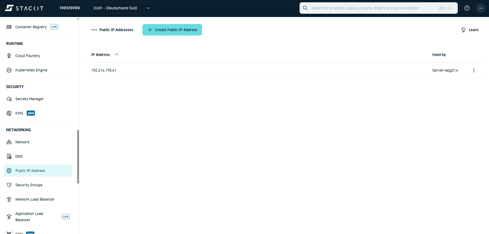
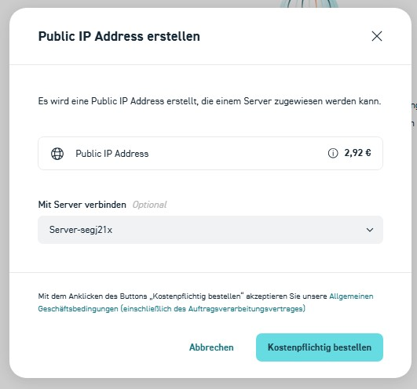

Transcodierung über eine virtuelle Maschine (VM)
Im folgenden Abschnitt wird die Transcodierung eines Videos mithilfe einer virtuellen Maschine (VM) durchgeführt.
Dabei wird ein zuvor in das Bucket hochgeladenes Video auf einer VM transcodiert. Das Ergebnis der Transcodierung wird anschließend wieder im Bucket abgelegt.
Die VM übernimmt in diesem Versuch die Rolle eines Rechenknotens, auf dem eine Transcoding-Software ausgeführt wird. Im Gegensatz zu vollständig verwalteten Cloud-Services bietet dieser Ansatz volle Kontrolle über:
-
eingesetzte Software
-
Transcoding-Parameter
-
Ablauf des Workflows

Ablauf im Überblick
Der Transcoding-Prozess besteht aus den folgenden Schritten:
-
Bereitstellung der virtuellen Maschine
Eine virtuelle Maschine (VM) mit Linux-Betriebssystem wird als Arbeitsumgebung eingerichtet. -
Einrichtung der Laufzeitumgebung
Instalation der benötigten Anwendungen auf der VM. -
Transcodierung
Mithilfe eines Kommandozeilenwerkzeugs (FFmpeg) wird eine MXF-Datei in ein Streaming-Format transcodiert. -
Rücktransfer der Ergebnisse
Die transcodierte Videodatei wird in das Bucket hochgeladen und steht dort für die weitere Verarbeitung oder Auslieferung bereit.
SSH-Schlüssel für den Serverzugang erstellen
Für den Zugriff auf den Linux-Server wird eine Anmeldung per SSH-Schlüssel verwendet. Dabei besteht ein Schlüssel immer aus einem privaten und einem öffentlichen Teil. In der STACKIT-Weboberfläche wird nur der öffentliche Schlüssel hinterlegt.
Schritt 1: SSH-Schlüsselpaar erzeugen (plattformunabhängig)
Das SSH-Schlüsselpaar wird über den folgenden Online-Generator erzeugt:
https://8gwifi.org/sshfunctions.jsp

1.Öffnen Sie die oben genannte Webseite.
2.Wählen Sie als Algorithmus RSA.
3.Erzeugen Sie ein neues Schlüsselpaar.
Schritt 2: Key in STACKIT ablegen
Speichern Sie sowohl den Public Key als auch den Private Key lokal auf Ihrem Rechner, z. B. unter folgendem Namen:
pub-key-stackit.txt
priv-key-stackit.txt
Bei der Servererstellung kann hierfür später das erstellte Schlüsselpaar verwendet werden.
Wichtig: Unter Linux und macOS müssen Sie die Zugriffsrechte auf die Datei, die den privaten Schlüssel enthält, ändern:
chmod 400 <priv-key-file>
Um sich später mit der VM verbinden zu können, nutzen Sie folgenden Befehl:
ssh -i <priv-key-file> ubuntu@<public ip der vm>
Schritt 3: Einrichtung des Keys auf der STACKIT Weboberfläche
Der öffentliche Schlüssel soll nun mit Ihrem STACKIT-Konto verknüpft werden.
Navigieren sie hierzu zu ihren Nutzereinstellungen:

Unter Passwort&Sicherheit finden Sie nun die Option "SSH-Schlüssel erstellen":

Geben Sie als Namen key-[HDS-Nutzername] ein. Zum Beispiel: key-musterax
In das Feld Schlüssel kopieren Sie Ihren Public Key
Anschließend auf Create klicken
Security Group anpassen
Konfiguration der Security Group für den SSH-Zugriff
Damit eine Verbindung zur virtuellen Maschine über SSH hergestellt werden kann, muss der entsprechende Netzwerkzugriff über Port 22 explizit erlaubt werden. In STACKIT erfolgt diese Zugriffskontrolle über sogenannte Security Groups. Security Groups definieren, welcher ein- und ausgehende Netzwerkverkehr für eine Ressource erlaubt ist.
Standardmäßig ist bei neu erstellten Servern kein externer Zugriff über Port 22 freigegeben. Aus diesem Grund muss vor dem ersten Login eine passende Regel ergänzt werden.
Öffnen der Security Groups im STACKIT Portal
Der Zugriff auf die Security Groups erfolgt über das STACKIT Control Center.
Navigieren Sie in der linken Seitenleiste zu:
Networks → Security Groups

In der Übersicht wird mindestens eine Security Group mit dem Namen default angezeigt. Diese Security Group ist in der Regel bereits dem Server zugewiesen und kann für den SSH-Zugriff verwendet werden.
Bearbeiten der bestehenden Security Group
Klicken Sie in der Liste der Security Groups auf den Namen default, um die Detailansicht zu öffnen. In dieser Ansicht werden alle aktuell definierten Sicherheitsregeln angezeigt.
Hinzufügen einer SSH-Regel
Um den SSH-Zugriff zu erlauben, muss eine neue eingehende Regel erstellt werden. Klicken Sie hierzu auf die Schaltfläche zum Hinzufügen einer neuen Sicherheitsregel. Hier sehen Sie unten ein Plus mit der Beschriftung "Sicherheitsregel erstellen"
Tragen Sie die folgenden Werte ein:
Name: ssh
Protokoll: TCP
Start-Port: 22
End-Port: 22
IP-Bereich: 0.0.0.0/0
Beschreibung: SSH Zugriff
Speichern Sie die Regel nach dem Eintragen der Werte. Die Änderung wird sofort wirksam.
Virtual Machine erstellen
Navigieren Sie zu Computing / Server

Klicken Sie auf Create Server
General information
- Name: vm-[HDS-Nutzername]
- Availability Zone: EU01-1
Boot volume
- Betriebssystem: Ubuntu
- Version: Ubuntu 24.04
- STACKIT Server Agent: aktiviert
- Leistungsklasse: Performance Class 2
- Volumengröße: 60 GB
- Boot-Volume beim Löschen löschen: aktivieren
Machine types
- Kategorie: Allgemeine Zwecke
- Auswahl: g2i.2 2 CPU 8GB RAM
Management
- Server Backup Management Service: deaktiviert
- Server Update Management Service: deaktiviert
Network
Wählen Sie hier das bereits angelegte Netzwerk aus
Initial Credentials
SSH-Schlüssel, welcher vorher angelegt wurde, auswählen.
User authentication
(Keine Eingabe)
Kostenpflichtig bestellen anklicken
Nun sollten SIe ihren erstellten Server sehen können

Zuweisung einer öffentlichen IP-Adresse zur virtuellen Maschine
Damit eine virtuelle Maschine aus dem Internet erreichbar ist, muss ihr eine öffentliche IP-Adresse zugewiesen werden. In STACKIT sind Server standardmäßig nur innerhalb des internen Netzwerks erreichbar. Selbst korrekt konfigurierte Security Groups erlauben ohne eine öffentliche IP keinen externen Zugriff, beispielsweise per SSH.
In diesem Abschnitt wird gezeigt, wie eine öffentliche IPv4-Adresse erstellt und mit einer bestehenden virtuellen Maschine verbunden wird.
Öffnen der Public-IP-Verwaltung
Die Verwaltung öffentlicher IP-Adressen erfolgt direkt über die Serveransicht im STACKIT Portal.
Navigieren Sie im linken Menü des Servers zu:
Network → Public IP Address

Die Public IP Address muss dem neu erstellten Server zugeordnet werden:

Verbindung zur virtuellen Maschine
Zunächst wird eine Verbindung zur zuvor erstellten virtuellen Maschine hergestellt. Der Zugriff erfolgt über das Secure Shell Protokoll (SSH).
ssh -i <PFAD_ZUM_PRIVATE_KEY> ubuntu@<PUBLIC-IP-DER-VM>
Info
ℹ️ Hinweis:
Beim ersten Verbindungsaufbau per SSH erscheint eine Sicherheitsabfrage zum sogenannten Host-Fingerprint.
Diese Abfrage dient dazu, die Identität des entfernten Servers zu überprüfen.
Da es sich hierbei um eine neu erstellte virtuelle Maschine handelt, ist der Fingerprint dem lokalen System noch nicht bekannt.
In diesem Fall genügt es, die Abfrage mit yes zu bestätigen.
Der Fingerprint wird anschließend gespeichert, sodass diese Abfrage bei zukünftigen Verbindungen nicht erneut erscheint.
Nach erfolgreicher Eingabe sollte folgende Ausgabe in der lokalen Shell zu sehen sein

Frage 1.3
Was passiert technisch, wenn der zuvor ausgeführte ssh-Befehl eingegeben wird?
Beschreiben Sie, welche Komponenten beteiligt sind und welche Aktionen im Hintergrund ablaufen.
Gehen Sie dabei insbesondere darauf ein, wie der Befehl mit dem Betriebssystem bzw. der Cloud-Infrastruktur interagiert.
Nach erfolgreicher Anmeldung befindet man sich auf dem Linux-System der virtuellen Maschine und kann dort weitere Software installieren und ausführen.
Einrichten der Laufzeitumgebung
In den folgenden Abschnitten werden das Betriebssystem aktualisiert und die Anwendungen s3cmd sowie ffmpeg installiert.
Aktualisierung des Betriebssystems
Zur Aktualisierung des Betriebssystems Ubuntu geben Sie bitte folgenden Befehl ein:
sudo apt-get update
Dieser Befehl aktualisiert die Paketlisten des Systems. Dabei wird geprüft, welche neuen Versionen von Software verfügbar sind, ohne sie direkt zu installieren.
Installation der Transcoding-Software
Für die Transcodierung wird in diesem Versuch das Kommandozeilenwerkzeug FFmpeg eingesetzt. FFmpeg ist ein weit verbreitetes Open-Source-Werkzeug zur Verarbeitung von Audio- und Videodaten und wird sowohl in Forschung, Lehre als auch in produktiven Medien-Workflows verwendet.
Die Installation erfolgt direkt auf der virtuellen Maschine über den Paketmanager des Betriebssystems.
sudo apt-get install ffmpeg -y
Dieser Befehl installiert das Programm ffmpeg, das für die Verarbeitung und Konvertierung von Audio- und Videodateien verwendet wird. Die Option -y sorgt dafür, dass alle Rückfragen automatisch mit „Ja“ bestätigt werden.
Nach erfolgreicher Ausführung sollten sie folgende Meldung bekommen:

Zugriff auf den Object Storage von der virtuellen Maschine
Nachdem die virtuelle Maschine vorbereitet und die Transcoding-Software installiert wurde, muss sie nun auf das Bucket zugreifen können. Dazu wird auf der VM die bereits bekannte S3-kompatible Schnittstelle verwendet. Die virtuelle Maschine übernimmt damit aktiv die Rolle des Transcoders und greift direkt auf die im Bucket abgelegten Quelldateien zu.
Nutzung der S3-kompatiblen Schnittstelle mit s3cmd
STACKIT stellt für den Object Storage keine eigenen, vollwertigen Client-Werkzeuge bereit, wie sie beispielsweise von großen Hyperscalern angeboten werden. Die Verwaltung des Object Storage erfolgt primär über die Weboberfläche des STACKIT Control Centers, in der grundlegende Aufgaben wie das Anlegen von Buckets oder das Erstellen von Zugangsdaten durchgeführt werden können.
Für den Datentransfer sowie für automatisierte Workflows stellt STACKIT eine S3-kompatible Schnittstelle bereit. Diese implementiert die Amazon-S3-API, die sich als De-facto-Standard für objektbasierten Cloud-Speicher etabliert hat. Durch diesen Ansatz können etablierte, herstellerunabhängige Werkzeuge eingesetzt werden.
Im Rahmen dieses Versuchs wird ausschließlich das Open-Source-Werkzeug s3cmd verwendet.
s3cmd dient hierbei als Client zur Kommunikation mit der S3-kompatiblen Schnittstelle von STACKIT. Der Zugriff erfolgt explizit über den STACKIT-Endpoint, es wird also keine AWS-Infrastruktur genutzt.
Installation von s3cmd
Installieren Sie s3cmd über den Paketmanager des Betriebssystems:
sudo apt-get install s3cmd -y
Folgende Ausgabe sollte daraus erfolgen:

Prüfen Sie die Installation bitte mit folgendem Befehl
s3cmd --version
Nun geht es an das Konfigurieren, hierfür benötigen wir den Befehl:
s3cmd --configure
Hier werden seriell der Access Key und Secret Key abgefragt, sowie Default Region Name und Default Output Format
Die Ausgabe sollte so aussehen:
| Feld | Eingabe |
|---|---|
| Access Key | <Ihr Access Key> |
| Secret Key | <Ihr Secret Key> |
| Default Region [US] | eu01 |
| S3 Endpoint [s3.amazonaws.com] | object.storage.eu01.onstackit.cloud |
| DNS-style bucket+hostname | %(bucket)s.object.storage.eu01.onstackit.cloud |
| Encryption password | Enter drücken |
| Path to GPG program | Enter drücken |
| Use HTTPS Protocol | Yes |
| HTTP Proxy server name | Enter drücken |
| Test access with supplied credentials? | Y |
| Save settings? | y |
Alle weiteren Abfragen bitte unverändert bestätigen.
Nach Abschluss der Konfiguration sollte von s3cmd folgende Meldung ausgegeben werden:
Success. Your access key and secret key worked fine :-)
Info
Access Key und Secret Key sind jene, die Sie zu Beginn in STACKIT angelegt haben. Es wird vorausgesetzt, dass Sie sich diese sorgfältig notiert haben. Falls dies nicht der Fall ist, können die Zugangsdaten jederzeit erneut erstellt werden. Eine Anleitung dazu finden Sie im vorherigen Kapitel. 🙂
Test des Zugriffs auf den Object Storage von STACKIT
Nach der erfolgreichen Konfiguration wird überprüft, ob die virtuelle Maschine auf das Bucket zugreifen kann. Dazu wird der zuvor erstellte Bucket aufgelistet.
Bitte geben sie folgende Befehle in die VM Console ein:
s3cmd ls s3://<DEINBUCKETNAME>
Bereitstellen der Quelldatei auf dem Bucket
Im nächsten Schritt wird eine per URL verfügbare Quelldatei auf dem Bucket abgelegt.
Kopieren der Datei in das Bucket
Das Kopieren erfolgt mittels curlund s3cmd. Geben Sie den folgenden Befehl (aktualisiert am 27.06.26) ein:
curl -k https://mvs-public.s3.eu-central-1.amazonaws.com/STEM2-Clip-MVS-STACKIT.mxf | s3cmd put - s3://<DEINBUCKETNAME>/Versuch1/STEM2-Clip-MVS-STACKIT.mxf
Frage 1.4
Wie können Sie nun herausfinden, ob der Upload wie geplant funktioniert hat?
Recherchieren Sie den benötigten s3cmd Befehl und nehmen Sie einen Screenshot der Ausgabe in Ihre Ausarbeitung auf